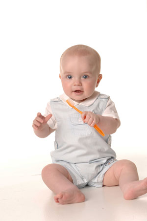

Childrens Dentistry in Evansville, Indiana • East Office (812) 479 - 8609 • West Office (812) 401-6095


Welcome! You have paid us a great compliment by allowing us to provide dental care to your child. Our office follows the American Academy of Pediatric Dentistry and American Dental Association recommendations to see children around their first birthday.
Our “dental home” is created to be an ongoing relationship between our dentists and your child. It is meant to be a resource for answering all your dental questions as well as monitoring growth and development. It will emphasize preventive dentistry, make referrals when appropriate and provide your child with a familiar setting in case of emergency. Having a dental home enhances the dental professional’s ability to assist children and their parents/care givers in the quest for optimum oral health.
The establishment of a dental home traditionally begins with the age 1 visit. This is especially important because it introduces your child to our dental team. Early dental visits allow the dentist to discuss proper infant oral health care, teach lifelong habits and takes preventive steps to avoid cavities.
The age 1 dental visit begins when our new dental assistant greets you and your child in the reception area and escorts you to our new patient room where we can get to know you both. After reviewing your needs and questions, she will introduce the doctor to you. We will discuss growth and development, feeding and oral habits. At this visit, we will also perform an oral screening, provide you with oral hygiene instructions and discuss pacifier, finger or other oral habits. Traditionally, this visit is done with the child laying on mom or dad’s lap.
Your first visit begins when our dental assistant greets you and your child in the reception area, then escorts you to our new patient room where we can get to know you both. She will review your child’s needs and answer many of your initial questions. If you have a young child, you are encouraged to stay with your child for their first visit. It is important to develop a sense of trust between our dental team and you and your child.
As your child gets older and more comfortable with our office, we may encourage your child to come back on their own so that our team can develop a trust and rapport with your child. We realize every child is different and there is no definitive rule of when the children are supposed to be seen on their own. Based on your child’s specific needs, Dr. Jeff might make some recommendations on the best time to begin to develop an individual relationship with your child and our team. Due to space considerations, it would be hard to accommodate the parents of all patients in the back treatment area at one time, but parents are always welcome to “sneak-a-peak” during dental visits.
For older children, the assistant will begin their first visit by giving a tour of the office to your child. Many times we will let the kids relax and get used to our office by doing puzzles, playing games, or shooting baskets at our indoor basketball goal. Once your child feels more comfortable with their surroundings, we will begin “show and tell” with all our dental instruments. We encourage the child to actively participate in the visit by asking any questions that they might have. Parents are encouraged to "sneak-a-peek" during the visit - seeing is believing! Mom and Dad are usually amazed how wonderful their children listen and behave during the visit. Occasionally, a child may cry during some part of the visit. This is normal age appropriate behavior and usually the child will work their way through it with a little compassion, positive reinforcement, and some TLC.
The first visit typically consists of a complete dental examination, cleaning, and fluoride treatment. This includes checking for cavities, gum disease, checking the bite for correct alignment of the jaws and checking the development of the teeth. X-rays will be taken based on the individual needs of your child. The appointment also includes a final consultation to address any further questions or necessary dental treatment. Every appointment ends with some take home goodies for your child and a trip to the toy tower for a job well done!
Our entire staff is dedicated to providing thorough and gentle dental care. We strive to make each child's dental visit as pleasant as possible. You can play a large part in preparing your child for his/her first visit to the dentist. We would like to make a few suggestions to prepare your youngster for the initial visit.
The office makes a practice of using words that convey the same message but are pleasant and non-frightening to children. It is important to be positive regardless of the parents’ past dental experiences. This initial examination involves nothing uncomfortable and should be perceived by the child as non-threatening. It is our job to make this the most positive experience possible.
You may access the forms to assist us with your child's care. Please print and fill out the new patient forms under the "Downloadable Forms" Section on the left side of this page and then bring the forms to your appointment.